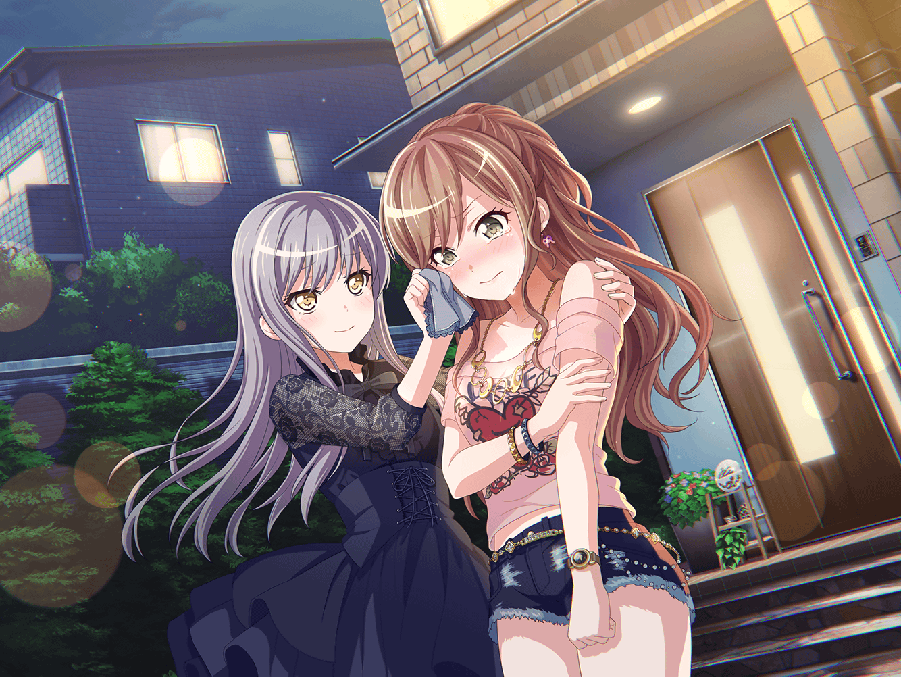

帰り道
あこ
あ～、ファミレス楽しかった～！
もうこんな時間かぁ……もっと話してたかったなぁ
リサ
うんうん、楽しかったね～
あこ、今日はほんとによくしゃべったねぇ
あこ
だって、リサ姉と話したいことが
いーーーっぱいあったんだもん！
まだ話し足りないよ～
リサ
じゃあ、続きはまた明日の練習のときに話そっか☆
あこ
うん、そうするー！
友希那
あこ、これ以上遅くなってはご両親が心配するわ。
早く帰りなさい
友希那
紗夜、あこと燐子と家の方向は近かったわよね？
途中まで一緒に帰ってもらえるかしら
紗夜
わかりました。宇田川さん、白金さん、行きましょう
あこ
はーい！
燐子
は、はい……
友希那さん……今井さん……
お疲れさまでした……
リサ
お疲れ～！
気をつけて帰るんだよ
友希那
お疲れさま。また明日ね
友希那
……私たちも帰りましょうか
リサ
うんっ
リサ
なんかさー、友希那と２人で帰るのって久しぶりじゃない？
友希那
そうかしら？
リサ
そうだよ～。友希那、
このところ自主練習でスタジオに残ってること多いでしょ。
アタシも練習のあとにバイト入れてたりするし……
リサ
一緒に帰れてうれしいな～☆
友希那
……そう
リサ
ちょっとー、友希那もちょっと嬉しそうにしてよ～
友希那
毎日学校でも会っているし、練習でも顔合わせてるじゃない
リサ
それはそうだけどさー……アタシは２人で話したかったの！
リサ
ファミレスの話の続きなんだけどさ、アタシ抜きの練習って
今日が初めてだったじゃん？ 友希那はどう思った？
友希那
どうって……ファミレスでも言った通り、
リサがいなくて大変だったのよ。
練習にはリサにいてもらわないと困るわ
リサ
そっか。友希那がそこまで言ってくれることなかったから、
ちょっと自信ついた！
リサ
ほら、アタシってRoseliaで一番楽器ヘタじゃん？ いつも
足手まといになってるんじゃないか、ってずっと思っててさ。
……あはは、いまさらだよね～
友希那
Roseliaに入ってから結構経つのに、
まだそんなことを思っていたの？
友希那
リサとならいい音が出せる、そう思ったからこそ加入させたの。
私がOKを出したんだから、
自信を持ってRoseliaにいればいいのよ
リサ
えへへ……ありがと
友希那
お礼を言わないといけないのは、私の方だわ。
……前々からリサに頼っている部分があることは気付いていたの。
今日、リサがいなくて……
友希那
……私はリサに頼り切っていることばかりだった、って
改めてわかったわ
リサ
アタシ、そんなに頼られてたっけ……
友希那
そうよ。リサは無意識かもしれないけど、
いつも支えてくれて、ありがとう
リサ
何、改まっちゃって～！ アタシと友希那の仲じゃん！
お礼なんかいいよ
リサ
アタシは友希那と一緒にバンドやれてることが嬉しいんだよ。
アタシにできることはなんでもやるからね！
友希那
じゃあ、改めて言っておくわ。
Roseliaが高みを目指すためには、リサは必要不可欠よ。
私にずっと着いてきて
リサ
……！！
リサ
友希那がそんなこと言ってくれる日が来るなんて……
友希那
Roseliaを引っ張っていくのは私だけど、
精神的支柱はリサだと思ってる
友希那
燐子がリサがいると安心すると言っていたけれど、
それはきっとRoselia全員がそうなのよ
友希那
リサにしかできないことなんだから、いてもらわないと困るの。
わかった？
リサ
うん……
友希那
ちょっと……私が泣かせたみたいじゃない
リサ
だって～！
友希那
ほら、このハンカチで涙拭いて
リサ
ありがと……明日きれいにして返すね
友希那
別にいつでもいいわ
友希那
ほら、もう家に着いたわよ。
……また明日ね。おやすみなさい
リサ
……うん、おやすみ！